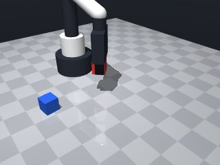
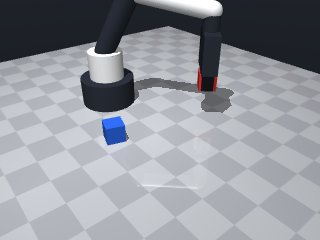
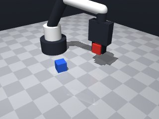
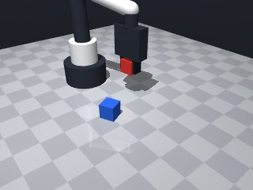
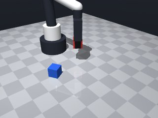
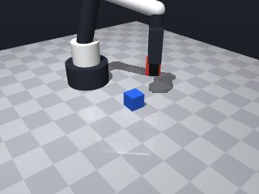
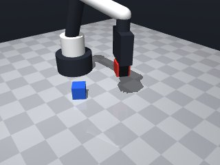
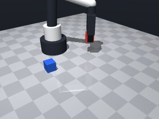

0 demonstrations · reward: vlm · perception: sim · 8 practice episodes in 1 rounds
Safety layer: 0 halts, 0 clamps.
Vision judge vs ground truth on 20 held-out episodes: accuracy 0%, abstained 0%, false-success rate 100%.
| role | model | calls | tokens in | tokens out | USD |
|---|---|---|---|---|---|
| coder | nvidia/nemotron-3-super-120b-a12b | 1 | 1,539 | 1,320 | $0.0016 |
| summarizer | nvidia/Nemotron-3_5-Lightning | 0 | 0 | 0 | $0.0000 |
| judge | nvidia/Nemotron-3.5-Super-VL | 28 | 36,204 | 14,243 | $0.0237 |
| compute | local | 55 s | $0.0000 | ||
| total | 29 | 37,743 | 15,563 | $0.0253 |
- First attempt: perceive the red cube, move above it, descend to a grasp height near its centre, close the gripper, verify hold, then lift 5 cm above the table. - Use slow speeds for precision near the object, default speed for travel. - Include basic error handling and verification after grasp. - If grasp fails, release and retry once before aborting.
--- round_0/skill.py +++ round_1/skill.py @@ -0,0 +1,68 @@ +import math + +def run(robot): + """ + Pick up the red cube and hold it at least 5 cm above the table. + Returns True if the cube is successfully lifted, False otherwise. + """ + try: + # Start from a known safe pose + robot.home() + + # Observe the scene to locate the red cube + obs = robot.observe() + red_pose = None + for name, obj in obs["objects"].items(): + if obj["color"] == "red": + red_pose = robot.get_pose(name) + break + + if red_pose is None: + robot.log("Red cube not found in observation.") + return False + + # Extract position and orientation + cx, cy, cz = red_pose["pos"] + cyaw = red_pose["yaw"] + + # --- Move to a safe pose above the cube --- + # Choose a height 5 cm above the table (z = 0.05 m) + above_z = 0.05 + robot.move_to(cx, cy, above_z, yaw=cyaw, speed=0.15) + + # --- Descend to grasp height --- + # For a 3 cm cube, its centre sits at ~0.015 m when on the table. + # Setting the tool point to this height places the finger pads around the cube's middle. + grasp_z = 0.015 + robot.move_to(cx, cy, grasp_z, yaw=cyaw, speed=0.07) + + # --- Attempt to grasp --- + if not robot.grasp(): + robot.log("First grasp attempt failed, releasing and retrying.") + robot.release() + robot.wait(0.1) + if not robot.grasp(): + robot.log("Second grasp attempt also failed.") + return False + + # Verify that we are actually holding something + if robot.holding() is None: + robot.log("Grasp reported success but holding() is None.") + robot.release() + return False + + # --- Lift the cube at least 5 cm above the table --- + # Current height is grasp_z; add 0.05 m to achieve the required clearance. + lift_z = grasp_z + 0.05 + robot.move_to(cx, cy, lift_z, yaw=cyaw, speed=0.1) + + # Brief pause to ensure stability + robot.wait(0.2) + + robot.log("Red cube lifted successfully.") + return True + + except Exception as e: + # Log unexpected errors and fail the episode + robot.log("Exception during lift:", e) + return False








import math
def run(robot):
"""
Pick up the red cube and hold it at least 5 cm above the table.
Returns True if the cube is successfully lifted, False otherwise.
"""
try:
# Start from a known safe pose
robot.home()
# Observe the scene to locate the red cube
obs = robot.observe()
red_pose = None
for name, obj in obs["objects"].items():
if obj["color"] == "red":
red_pose = robot.get_pose(name)
break
if red_pose is None:
robot.log("Red cube not found in observation.")
return False
# Extract position and orientation
cx, cy, cz = red_pose["pos"]
cyaw = red_pose["yaw"]
# --- Move to a safe pose above the cube ---
# Choose a height 5 cm above the table (z = 0.05 m)
above_z = 0.05
robot.move_to(cx, cy, above_z, yaw=cyaw, speed=0.15)
# --- Descend to grasp height ---
# For a 3 cm cube, its centre sits at ~0.015 m when on the table.
# Setting the tool point to this height places the finger pads around the cube's middle.
grasp_z = 0.015
robot.move_to(cx, cy, grasp_z, yaw=cyaw, speed=0.07)
# --- Attempt to grasp ---
if not robot.grasp():
robot.log("First grasp attempt failed, releasing and retrying.")
robot.release()
robot.wait(0.1)
if not robot.grasp():
robot.log("Second grasp attempt also failed.")
return False
# Verify that we are actually holding something
if robot.holding() is None:
robot.log("Grasp reported success but holding() is None.")
robot.release()
return False
# --- Lift the cube at least 5 cm above the table ---
# Current height is grasp_z; add 0.05 m to achieve the required clearance.
lift_z = grasp_z + 0.05
robot.move_to(cx, cy, lift_z, yaw=cyaw, speed=0.1)
# Brief pause to ensure stability
robot.wait(0.2)
robot.log("Red cube lifted successfully.")
return True
except Exception as e:
# Log unexpected errors and fail the episode
robot.log("Exception during lift:", e)
return False